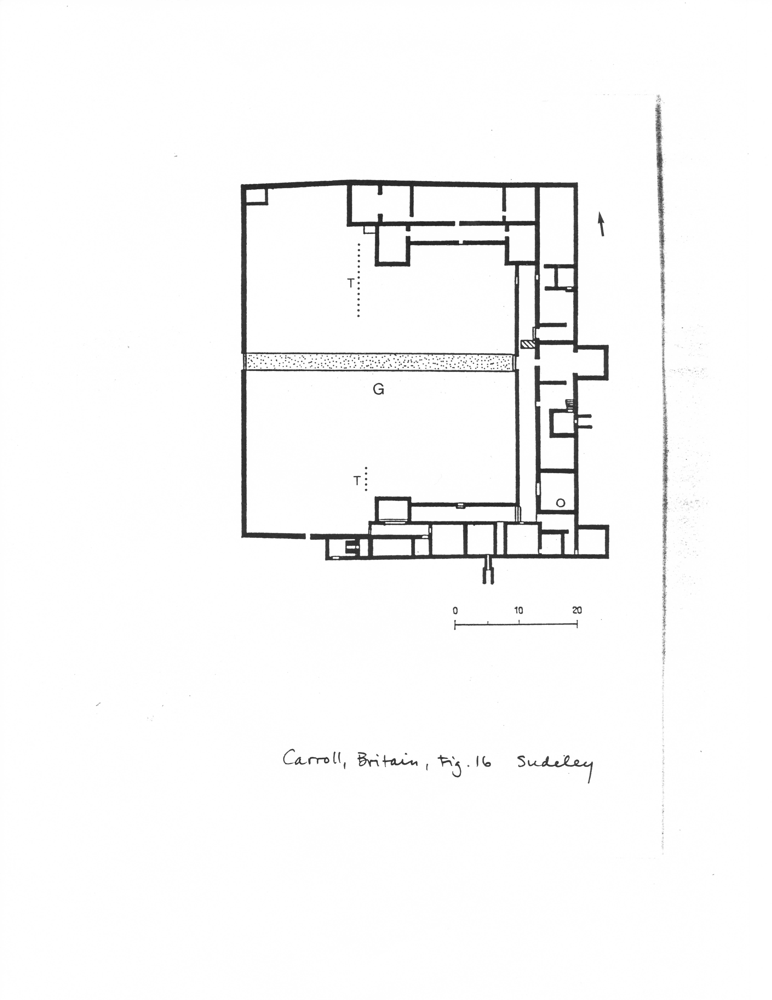

Sudeley/Spoonley Wood
Province
Province Description
Location
Sudeley/Spoonley Wood
Location Description
Sublocation
Sublocation Description
Garden
Sudeley/Spoonley Wood Rural Villa
Keywords
axial plan
terrace gardens
villae rusticae
Garden Description
The main residence of this rural estate in Gloucestershire, excavated in 1882, is of the winged corridor type (Fig. 1). From the north and south corners of the house, walls ran in a westerly direction to enclose an open courtyard (G in Fig. 1) approximately 65 meters wide and 45 meters deep from the outer boundary to the main entrance of the house. A paved path was axially arranged in the courtyard to connect the entrance to the courtyard with that of the residential building. The western third of the courtyard is marked off by low scarps which may be remains of garden terraces (T in Fig. 1). Finds from the site indicate a 3rd/4th century date for the complex.
Maps
Plans
 Fig. 1: Plan of the villa with a path (stippled) leading through a courtyard garden (G) and garden
Images
Dates
3rd/4th century for the complex.
Bibliography
- Ancient and Historical Monuments in the County of Gloucester Vol. 1. Royal Commission on Historical Monuments of England, London, 1976, pp. 113-114, fig. on p. 114. (worldcat)
- C. Taylor, The Archaeology of Gardens. Shire Archaeology Series 30, Aylesbury, 1983, pp. 30-31, fig. 1. (worldcat)
Periodo ID
Pleiades ID
TGN ID
Contributor
ORCID
Publication date
11 July 2020